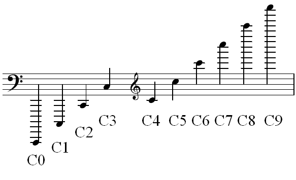
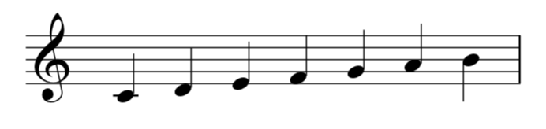
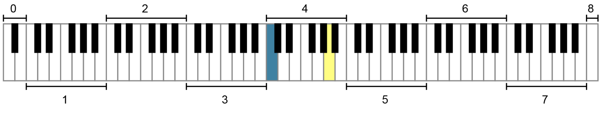

Open Music Theory：繁體中文版
美國標準音高記法（ASPN）
重點整理
- 美國標準音高記法（ASPN）把音名（例如 C）與下標的八度編號（例如 4）結合，用來標示特定頻率的樂音。
- 音高指具有特定頻率的個別樂音（例如 C4）；音級則不限定到這麼具體的程度（例如泛指 C）。
- ASPN 將 C 到 B 劃為一個八度，各八度由低至高編號，從 0 開始，再依序為 1、2 等。
- 鋼琴鍵盤主要涵蓋 ASPN 編號 1 至 7 的八度，也包含第 0 與第 8 八度的一小部分。
- 中央 C在 ASPN 中記為 C4。記住這個音的標記，可作為判讀其他音高的起點。
查看英文原文
Key Takeaways
- American Standard Pitch Notation (ASPN) provides labels for specific musical frequencies by combining a note name (such as C) with a subscript octave designation (such as 4).
- A pitch is a discrete tone with an individual frequency (e.g. C4), while a pitch class is less specific (e.g., C in general).
- ASPN differentiates between octaves, from C to B. The octaves are labeled from lowest to highest, beginning with 0 and continuing in ascending numerical order (1, 2, etc.).
- A piano keyboard primarily uses the ASPN octave designations 1 through 7, although small portions of octaves 0 and 8 are included.
- Middle C is C4 in ASPN. It is helpful to memorize the ASPN label of this note as a starting point.
為了討論特定的音，亦即特定音高，我們將使用美國標準音高記法，簡稱 ASPN。ASPN 將音名（例如 C）與下標的八度編號（例如 4）結合，形成由兩部分組成的標記，例如 C4。這套標記十分實用，因為人類聽覺範圍內所有可能的樂音，從最低音到最高音，都能藉此辨識。
〈譜號的判讀〉介紹過八度等價：這個概念說明了為什麼相隔一個或多個八度的音會使用相同的字母音名。樂理學家會區分「音高」與「音級」：前者是具有特定頻率的個別樂音（用 ASPN 表示，例如 C4），後者則不限定到這麼具體的程度（例如泛指 C）。一個音級涵蓋所有八度中具有相同字母音名的音，以及它們的等音。例如，所有的 C 都屬於同一音級，而與 C 等音的 D𝄫 和 B♯ 也屬於 C 音級；詳見〈音高與音級〉。本章將以 ASPN 為特定音高命名。
查看英文原文
American Standard Pitch Notation and Pitch versus Pitch Class
In order to discuss specific notes, or pitches, we will use American Standard Pitch Notation, abbreviated ASPN. ASPN designates specific musical pitches by combining a note name (such as C) with a subscript octave designation (such as 4), creating a bipartite label (for example, C4). ASPN labels are very useful, since they can identify every possible musical note within human hearing range, from the lowest pitches to the highest.
The Reading Clefs chapter introduced octave equivalence, the concept that explains why notes one or more octaves apart have the same letter name. Music theorists distinguish between a pitch, a discrete tone with an individual frequency (e.g. C4 using ASPN), versus a pitch class, which is less specific (e.g., C in general). A pitch class includes all the pitches with the same letter name, in any octave, along with their enharmonic equivalents. For example, all Cs are the same pitch class, and the enharmonically equivalent notes D𝄫 and B♯ are also part of the C pitch class; see Pitch and Pitch Class for more information. In this chapter we are naming specific pitches with ASPN.
ASPN 以 C 為起點、B 為終點，區分各個八度。[1]也就是說，每一個新的八度編號都從 C 開始，如例 1所示。編號由低至高，從 0 起依數字順序排列（1、2、3 等）。中央 C的音高記為 C4；記住這一點很有幫助。

同一八度內、尚未到達下一個 C 的所有字母音名，都使用相同的八度編號。例如，例 2中的所有音都屬於第 4 八度，因為它們位於 C4至 C5以下的範圍。加在音符上的變音記號不會改變其 ASPN 編號。例如，B♯3與 C4雖然是等音，八度編號卻不同，因為 B♯ 仍算在較低的那個八度之內。

你可以用下列練習，熟悉各種譜號中的 ASPN 記法：
查看英文原文
ASPN and Octave Designations
ASPN differentiates between octaves, beginning with the pitch C and ending with the pitch B.[1] This means that each new octave designation begins on the note C, as seen inExample 1. The octaves are labeled from lowest to highest, beginning with 0 and continuing in numerical order (1, 2, 3, etc.). The pitch middle C is C4, which is useful to memorize.
All letter names within an octave (below the C of the next octave) receive the same octave designation. For example, all of the notes in Example 2 would be designated in the 4 octave, because they are above C4 but below C5. Accidentals applied to a note do not have an effect on its ASPN number. For example, B♯3 and C4 have different octave numbers despite being enharmonically equivalent, because the B♯ is still considered part of the lower octave.
You can practice ASPN notation in all clefs in the following exercise:
ASPN 標記非常適合用來在鋼琴鍵盤上尋找特定音。例 3以 ASPN 為鍵盤上的各個八度編號。如圖所示，鋼琴鍵盤涵蓋完整的第 1 至第 7 八度，也包含第 0 與第 8 八度的一小部分。ASPN 標記不因樂器或聲種而異。換句話說，無論一個 C4由長笛、長號、小提琴或人聲發出，它都記為 C4。

查看英文原文
ASPN and the Keyboard
ASPN labels are very helpful for finding specific notes on the piano keyboard. Example 3 depicts a piano keyboard with each octave labeled using ASPN notation. As you can see, the piano keyboard spans the full octaves 1 to 7. It also contains a small part of both octaves 0 and 8. ASPN labels are the same regardless of instrument or voice type. In other words, a C4 will always be labeled as such regardless of whether it is produced with a flute, trombone, violin, or voice.
例 4列出高音、低音、中音與次中音譜號中常見音符的 ASPN 標記。記住各譜號中 C4的位置，可以讓判讀 ASPN 標記更快、更容易。
例 4。四種譜號中音符的 ASPN 標記。
- Clendinning, Jane Piper 與 Elizabeth West Marvin。2021。《音樂家的樂理與分析指南》（The Musician’s Guide to Theory and Analysis），第 4 版。紐約：W. W. Norton and Company。
- Hoover, Cynthia Adams 與 Edwin M. Good。2013。〈鋼琴〉（“Piano”）。Grove Music Online。https://doi.org/10.1093/gmo/9781561592630.article.A2257895。
- Young, Robert W.。1939。〈對數頻率單位的術語〉（“Terminology for Logarithmic Frequency Units”）。Journal of the Acoustical Society of America 11（1939）：134–139。
媒體素材署名
- 八度編號，© Wikimedia Commons，屬公眾領域。
- 第 4 八度的 ASPN 標記，© Chelsey Hamm，採用CC BY-SA（姓名標示－相同方式分享）授權。
- 鋼琴 ASPN 標記，© AlwaysAngry，由 Megan Lavengood 改編，屬公眾領域。
- 你可能會疑惑，為什麼八度編號在 C 處改變，而不是從字母表開頭的 A 開始。Robert Young 對此寫道：「在音樂上，習慣以 C 音作為計算完整八度的起點。這並非處處通用，而且從邏輯來看，A 也許才應是起點；然而，通行慣例已選定 C。」見 Robert W. Young，〈對數頻率單位的術語〉（“Terminology for Logarithmic Frequency Units”），Journal of the Acoustical Society of America 11（1939）：135。↵
查看英文原文
ASPN and Staff Notation
Example 4 shows ASPN labels for common notes in the treble, bass, alto, and tenor clefs. Memorizing the location of C4 in each clef can make finding ASPN labels quicker and easier.
Example 4. ASPN labels for notes in four clefs.
- Clendinning, Jane Piper and Elizabeth West Marvin. 2021. The Musician’s Guide to Theory and Analysis, fourth edition. New York: W. W. Norton and Company.
- Hoover, Cynthia Adams and Edwin M. Good. 2013. “Piano.” Grove Music Online. https://doi.org/10.1093/gmo/9781561592630.article.A2257895.
- Young, Robert W. 1939. “Terminology for Logarithmic Frequency Units.” Journal of the Acoustical Society of America 11 (1939): 134–9.
- “Pitches, Pitch Classes, Octave Designation, Enharmonic Equivalence” (YouTube)
- Tutorial on ASPN Octave Labels (liveabout.com)
- Tutorial on ASPN Octave Labels (flutopedia.com)
- Helpful Graphic with ASPN Labels on the Grand Staff and Piano (Music Theory Tips)
- Flash Cards with ASPN Labels in Treble and Bass Clefs (quizlet.com)
- ASPN Labels and Staff Notation (.pdf, .pdf)
- ASPN Labels, p. 25 (.pdf)
- ASPN Labels, Staff Notation, and the Piano Keyboard, p.1 (.pdf)
- American Standard Pitch Notation (ASPN) (.pdf, .mscz). Asks students to identify pitches by ASPN label and write pitches in the correct octave from ASPN labels.
- American Standard Pitch Notation (ASPN), Treble and Bass Clef (.pdf, .mscz). Asks students to identify pitches by ASPN label and write pitches in the correct octave from ASPN labels. No C clefs.
Media Attributions
- Octave Designations © Wikimedia Commons is licensed under a Public Domain license
- Octave 4 ASPN Labels © Chelsey Hamm is licensed under a CC BY-SA (Attribution ShareAlike) license
- Piano ASPN Labels © AlwaysAngry adapted by Megan Lavengood is licensed under a Public Domain license
- You may wonder why octaves numbers change with the pitch C instead of A (the beginning of the alphabet). About this, Robert Young wrote: "It has become custom for musical purposes to consider the tone C as the point from which to count complete octaves. While this is not universally true and indeed logic might point to A as the starting point, yet common usage has settled on C." See Robert W. Young, "Terminology for Logarithmic Frequency Units," Journal of the Acoustical Society of America 11 (1939): 135. ↵